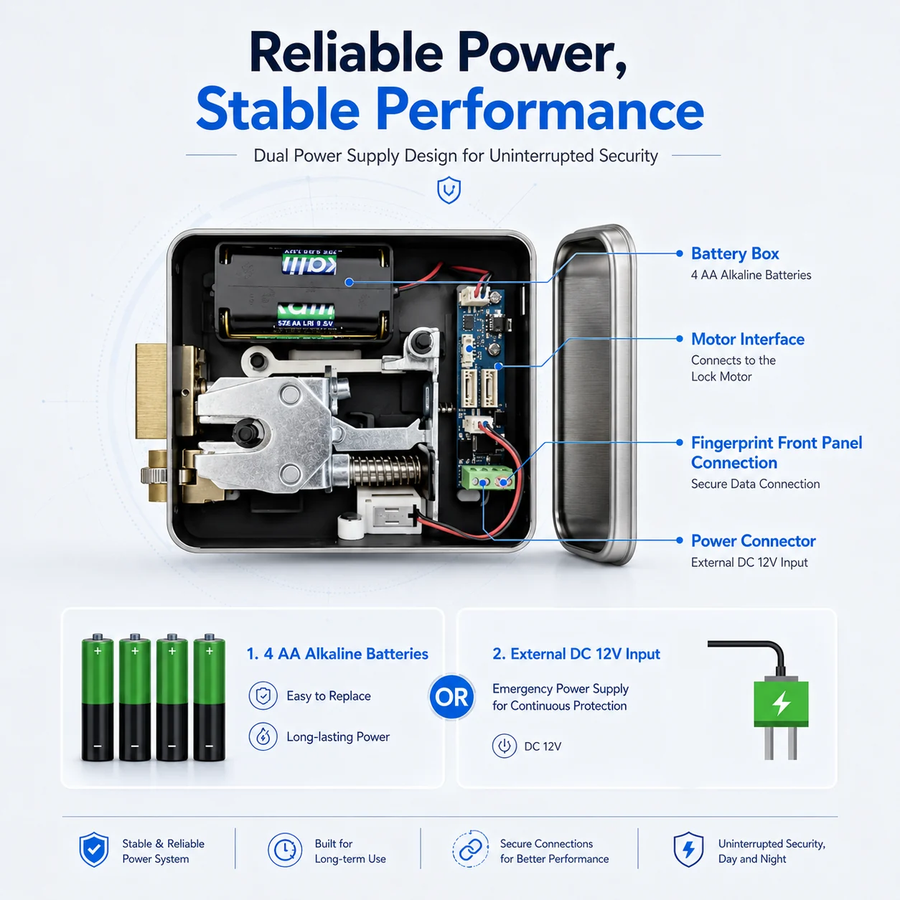
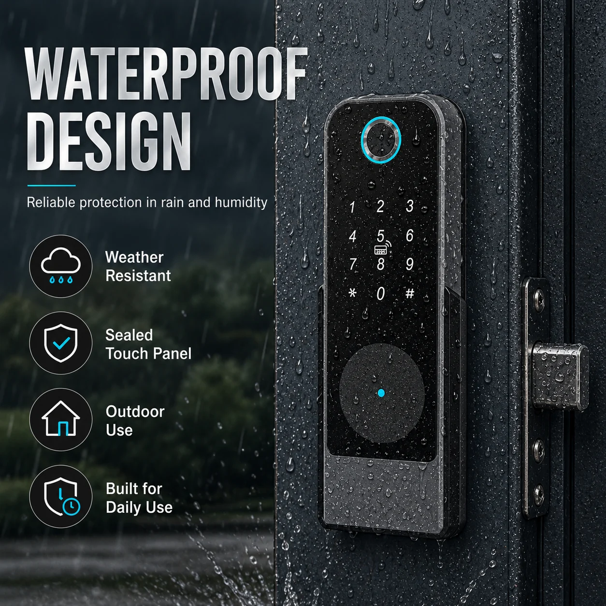

Glass Door Application
Designed as a compact access solution for glass-door and commercial environments.



BOLVRA SMART LOCK SERIES
Glass Door Lock
A smart lock solution for glass-door and commercial access applications. A useful product option for offices, shops, meeting rooms and system-installation projects.
Designed as a compact access solution for glass-door and commercial environments.
The product gallery presents a dual power supply design for continued security support.
Suitable for offices, shops, meeting rooms and system-installation projects.
It is positioned for glass-door and commercial access applications.
The gallery highlights dual power supply and waterproof design features.
Yes. Send the door type, project use and required functions through the BOLVRA quote form.
Tell us your glass door type, application and target quantity.